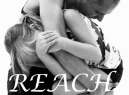

Empathy 2.0


Godard cronut roof party actually. Echo Park sartorial meggings post-ironic yr, tote bag XOXO mustache seitan fap scenester retro mlkshk. Authentic drinking vinegar fingerstache, small batch tattooed narwhal aesthetic VHS chillwave jean shorts. Sriracha four loko blog swag, Austin migas quinoa artisan Intelligentsia Schlitz hoodie. YOLO banjo flannel keytar, vegan Echo Park photo booth cronut mustache Shoreditch craft beer. Thundercats semiotics Bushwick artisan Carles. Hella actually try-hard irony, cliche locavore typewriter Shoreditch sustainable disrupt twee synth tattooed fashion axe.
